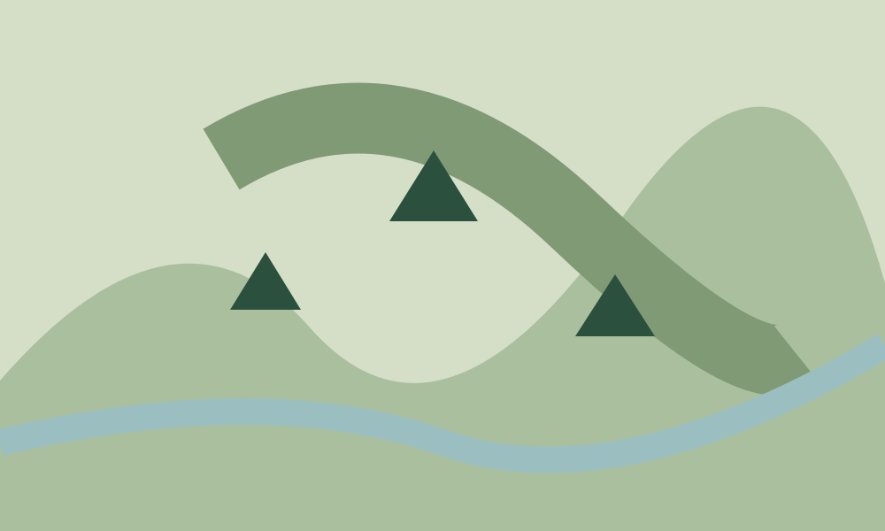

Northwood Range · Fictional region
A schematic of the sample region.
An original regional map demonstration. Layers and peak highlighting approximate unexecuted source affordances.

Grey TorGrey Tor highlighted on a fictional schematic.
All overlays and the first marker are shown. Controls require JavaScript.
No real topography, navigation, map tiles, road route, weather imagery or current conditions. The original illustration is static; no live map service or pan/zoom is connected.
From region to forecast
The source has a regional weather-map shell. This bounded local approximation uses fixed illustrations rather than real geographic or weather tiles.
View the sample elevation matrix